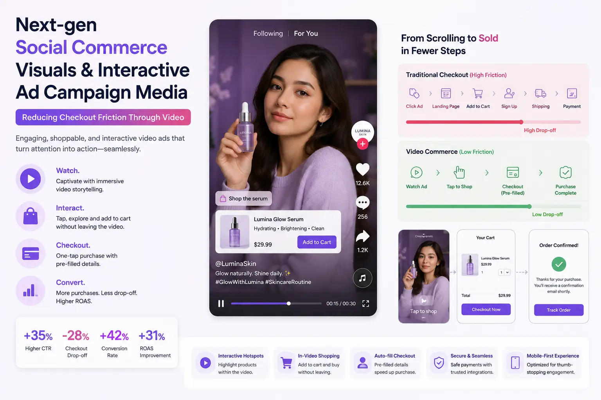

Integrating Shoppable Click-to-Buy Layers into Your Video Ad Assets
The Gap Between Desire and Purchase: Why Traditional Video Ads Leak Revenue
Traditional video advertising is extraordinarily effective at creating product desire — and extraordinarily ineffective at converting that desire into immediate purchase. The viewer watches a beautifully produced product video, feels genuine motivation to buy, and then faces the friction-filled journey of leaving the video, navigating to the brand's website, finding the specific product, and completing a multi-step checkout process. At every step, desire decays and abandonment probability increases.
The data is consistent across industries: the average time between a viewer seeing a product in a video ad and completing a purchase (for those who do convert) is measured in hours or days — not seconds. And for every viewer who eventually completes the journey, several more abandon it because the friction exceeded their motivation.
Shoppable video ad production eliminates this gap by making the video itself the point of sale — integrating commerce functionality directly into the video experience so that the moment of maximum desire coincides with the moment of purchase opportunity. The viewer sees the product, taps it, and buys it — all within the video. No navigation. No search. No environmental transition. The desire-to-purchase journey collapses from hours to seconds, and the conversion rate responds accordingly.
How Shoppable Video Technology Works: The Technical Foundation
Interactive e-commerce video assets layer commerce functionality on top of standard video content through a combination of video player technology, product data integration, and interactive overlay systems that work together to create a seamless viewing-to-buying experience.
- Interactive hotspot overlay system. Clickable product video overlays are interactive elements — icons, outlines, product cards, or subtle visual indicators — positioned on top of the video content at the locations and times where products appear in the frame. These overlays are time-coded to appear when the product is visible and disappear when it leaves the frame, creating a responsive interactive layer that tracks the product's visibility throughout the video. When the viewer taps or clicks a hotspot, it triggers a commerce interaction — typically a product card that displays name, price, variants, and an add-to-cart or buy-now action.
- Product catalog integration. The interactive overlay system connects to the brand's product catalog — the same database that powers the e-commerce website — pulling real-time product data including pricing, availability, variant options (size, colour, quantity), and inventory status. This real-time integration ensures that the shoppable video always displays current, accurate product information and that purchases made through the video are processed through the same fulfilment pipeline as standard e-commerce orders.
- In-video checkout versus redirect checkout. Shoppable video commerce flows fall into two categories: in-video checkout, where the entire purchase process (product selection, variant choice, payment, and order confirmation) occurs within the video player without the viewer ever leaving the video environment; and redirect checkout, where the video's interactive elements link to the product page on the brand's website, where the viewer completes the standard checkout process. In-video checkout produces higher conversion rates (because it maintains the video environment's engagement) but requires more complex technical integration. Redirect checkout is simpler to implement but introduces the navigation friction that shoppable video is designed to eliminate.
- Analytics and attribution. Interactive ad campaign media with shoppable functionality provides attribution data that standard video advertising cannot: not just impressions, views, and clicks, but product-level interaction data (which products were tapped, which variants were selected), commerce funnel data (add-to-cart rate, checkout initiation rate, purchase completion rate), and revenue attribution (the specific revenue generated by each video asset, each product hotspot, and each viewer interaction). This granular data enables precise ROI measurement and continuous optimisation of both the video content and the commerce integration.
Friction Elimination
Shoppable video collapses the desire-to-purchase journey from multiple steps across multiple environments to a single interaction within the video itself — eliminating the navigation friction that causes the majority of post-video purchase abandonment.
Impulse Capture
By making purchase possible at the exact moment of maximum desire — during the video viewing experience — shoppable video captures impulse purchase motivation that decays with every second of delay between desire and purchase opportunity.
Product-Level Attribution
Shoppable video provides product-level revenue attribution for video content — identifying which products, which scenes, and which creative approaches generate actual purchases, enabling data-driven optimisation of video production investment.
Content-Commerce Unification
Shoppable video unifies content and commerce into a single experience — the video is simultaneously entertainment, product education, and storefront. This unification produces higher engagement than pure advertising and higher conversion than pure content.

Production Requirements for Shoppable Video: Shooting for Interaction
Shoppable video ad production requires specific production considerations that standard video advertising does not address — because the video must function not only as a compelling visual narrative but also as an interactive commerce interface.
- Product visibility and hold time. Each shoppable product must be clearly visible in the frame for a minimum of 3–5 seconds per shoppable moment — long enough for the viewer to identify the product, decide to interact, and execute the tap or click. This hold time requirement affects editing pace: shoppable videos use longer product shots and slower cuts than standard video ads, ensuring that the interactive commerce functionality is usable without requiring the viewer to pause the video.
- Clean interaction zones. The areas of the frame where interactive hotspots will be placed must be free of competing visual elements — text overlays, graphics, rapid motion, or complex background detail — that would make the hotspot difficult to see or accurately target. This requirement influences both composition (leaving clean space around featured products) and motion design (keeping products relatively stable within the frame during shoppable moments).
- Multi-product spatial separation. When multiple products appear in the same frame, they must be spatially separated by enough screen distance for the viewer to target individual products without accidentally selecting adjacent items — particularly on mobile devices where touch targets require larger separation than desktop cursor interactions. The production must stage multi-product scenes with clear spatial gaps between items.
- Pause-worthy frame quality. Because viewers will pause the video to interact with product overlays, every frame during a shoppable moment must be compositionally strong enough to function as a static product image. Motion blur, mid-transition frames, and unflattering angles that are acceptable in continuous playback become visible problems when the viewer freezes the frame to interact. Dynamic product display ads require the visual quality standard of still photography applied to every frame of the video content.
Next-Gen Social Commerce Visuals: Platform-Specific Production
Next-gen social commerce visuals must be produced for the specific technical and creative requirements of each platform's shoppable video ecosystem.
Instagram Shopping
- Shoppable Reels in 9:16 format with product tags linked to Instagram Shop catalog
- Product tag placement coordinated with product visibility in the video content
- Content-first creative approach: the video must function as engaging content, not just a product showcase
- Integration through Meta Commerce Manager with product catalog synchronisation
TikTok Shop
- Shoppable video content with product links integrated through TikTok Seller Center
- Native, authentic creative style that aligns with TikTok's content conventions rather than polished ad aesthetics
- Product showcase moments integrated naturally into entertaining or educational content
- Live shopping integration for real-time product demonstration and purchase
Brand-Owned Website
- Embedded shoppable video players (Videowise, Tolstoy, Firework) on product pages and landing pages
- Direct integration with Shopify, WooCommerce, or custom e-commerce platform cart systems
- Higher production quality appropriate for brand-owned environments
- In-video checkout capability for maximum friction reduction
Reducing Checkout Friction Through Video: The Commerce Integration
Reducing checkout friction through video requires thoughtful integration of commerce functionality that enhances rather than interrupts the viewing experience.
- Non-intrusive interaction design. Shoppable overlays should be visible enough to be discoverable but subtle enough not to distract from the video content. The most effective designs use small, semi-transparent product indicators that expand into full product cards only when the viewer actively engages — ensuring that viewers who want to shop can do so easily while viewers who prefer to watch are not disrupted by persistent commerce UI elements.
- Persistent cart across video navigation. When multiple products are featured across a single video or a video series, the commerce system should maintain a persistent cart that accumulates selections without requiring the viewer to complete a separate checkout for each product — enabling the viewer to browse and select multiple products throughout the video experience and checkout once at the end.
- Real-time inventory and pricing. The commerce overlay must display real-time inventory status and current pricing — because displaying a product as available in the video when it is actually out of stock, or displaying a price that has changed since the product catalog was last synchronised, creates a trust violation that damages both the immediate conversion and the long-term brand relationship.
- Post-purchase continuity. After the viewer completes a purchase within the video, the experience should return seamlessly to the video content rather than redirecting to a separate order confirmation environment. This post-purchase continuity maintains the viewer's engagement with the content and creates the possibility of additional purchases from the same video session — treating the video as a browsable store rather than a single-transaction checkout.
E-commerce Visual Trends: The Shoppable Video Landscape in 2026
E-commerce visual trends in 2026 position shoppable video as the most rapidly growing format in digital commerce — driven by platform investment, consumer adoption, and measurable performance advantages.
- Live shopping integration. Live video with real-time shoppable functionality — where a presenter demonstrates products in a live stream and viewers purchase directly from the stream — has scaled from its origins in Chinese e-commerce platforms to become a global format adopted by Instagram Live Shopping, TikTok LIVE Shopping, YouTube Live Shopping, and brand-owned live commerce platforms. The live format adds urgency, social proof, and interactive engagement to the shoppable video model.
- AI-powered product recognition. Emerging shoppable video technologies use computer vision and AI to automatically identify products in video content and generate interactive overlays without manual hotspot placement — enabling the retroactive conversion of existing video libraries into shoppable content without re-editing or re-producing the original footage.
- Shoppable video in programmatic advertising. Programmatic ad platforms are increasingly supporting shoppable video ad formats — allowing brands to deploy interactive commerce video ads through programmatic channels with the targeting, optimisation, and scale capabilities of programmatic buying combined with the conversion advantages of shoppable functionality.
- User-generated shoppable content. Brands are enabling customers and creators to produce shoppable video content — providing them with product links, affiliate commerce functionality, and interactive overlay tools that transform authentic user-generated content into shoppable commerce assets. This approach combines the authenticity advantages of user-generated content with the conversion advantages of shoppable functionality. Digital ad production near me agencies are increasingly building shoppable video production into their standard commercial video services as client demand for interactive commerce content grows.
Conclusion
Shoppable video ad production, interactive e-commerce video assets, clickable product video overlays, next-gen social commerce visuals, and dynamic product display ads represent the convergence of content and commerce that is redefining how products are sold in digital environments — eliminating the gap between desire and purchase that traditional video advertising creates and accepts as unavoidable.
The commercial imperative is clear: video content that creates desire without providing an immediate purchase mechanism wastes conversion potential that shoppable integration captures. Reducing checkout friction through video is not a future technology — it is a current capability with proven conversion advantages, growing platform support, and accelerating consumer adoption. Brands that integrate shoppable commerce into their video production now capture revenue that their competitors' non-shoppable content leaves on the table.
At The PhD Ads in Madurai, we produce shoppable video ad production, interactive e-commerce video assets, and next-gen social commerce visuals for brands ready to make their video content the point of sale — digital ad production near me that turns every viewer into a buyer at the moment of maximum desire.
Key Topics
Ready to Make Your Video Content the Point of Sale?
At The PhD Ads in Madurai, we produce shoppable video ad production, interactive e-commerce video assets, and clickable product video overlays for brands ready to turn video viewers into buyers at the moment of maximum desire.
Email: team@e2o.in